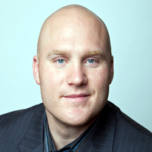

The Company:
Thunder Lee

Thunder Lee is a company started by brothers and co-founders Isaiah Kacyvenski and
Daniel Joseph Kacyvenski as an aesthetic alternative to an over saturated market.
Incorporating both a lo-fi D.I.Y. look along with high end leanings, their aim is to
bridge the inclusive with the exclusive. As a work-in-progress and a design experiment,
the company hopes to change and develop along with all of its interests and inside jokes.
Thunder Lee is an extension of the brothers wide-ranging paths and artistic pursuits.
The Creators:
Isaiah Kacyvenski

Isaiah Kacyvenski’s diverse background includes playing in the National Football League
for 8 years for the Seattle Seahawks, St. Louis Rams and the Oakland Raiders.
Isaiah has deep background in media and technology, were he focuses on using wearable
electronics to optimize performance and health. Isaiah is an active investor and advisor
in a wide variety of markets ranging from clean tech to real estate. He has been the subject
of an NFL Films profile about his rise from poverty to the NFL that received an
Emmy Nomination
for Outstanding Long Feature. He was also featured on The Oprah Winfrey
show in a segment titled "Why They Beat the Odds". For his work in concussion research,
Isaiah has received the PETA Compassionate Action Award. Isaiah holds a Cum Laude
Pre-Medicine Bachelor degree from Harvard University as well as an MBA from Harvard
Business School.
Dan Kacyvenski
Daniel Joseph Kacyvenski is a Brooklyn based artist, filmmaker, sculptor, writer, actor,
director, performance artist, and designer. His work has shown internationally and he has
collaborated with artists as eclectic as Brock Enright, Modeselektor, and Kendrick Lamar.
His art and installations have received praise from The New York Times, The Village Voice,
The New Yorker, and Vice magazine, among others.